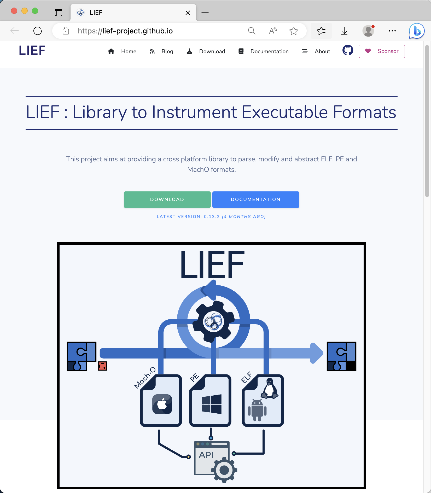

主页
1.1.
前言
1.2.
可执行文件格式概览
1.3.
通用内容
1.4.
常见格式
1.4.1.
COFF
1.4.2.
PE
1.4.3.
ELF
1.4.4.
Mach-O
1.5.
相关工具
1.5.1.
file
1.5.2.
LIEF
1.5.2.1.
LIEF用法举例
1.5.2.1.1.
Mach-O
1.5.2.1.2.
Android
1.5.2.1.2.1.
OAT
1.5.2.1.3.
ELF
1.5.2.1.3.1.
libtacker.so
1.6.
子教程
1.7.
附录
1.7.1.
参考资料
本书使用 HonKit 发布
LIEF
LIEF
LIEF
介绍：用于查看和解析（
ELF
/
MachO
/
PE
/
Android
等）各种通用的可执行文件格式的库
一句话描述：Library to Instrument Executable Formats
支持格式
ELF
PE
MachO
Android
DEX
OAT
ART
VDEX
主页
LIEF
图

文档
Welcome to LIEF’s documentation! — LIEF Documentation
下载
LIEF
安装
Mac
pip
install
lief
results matching "
"
No results matching "
"